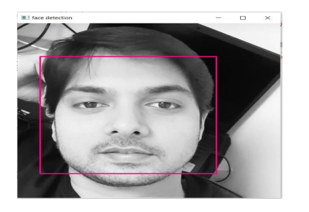

Literature Review¶
2.1 Artificial Intelligence (AI) and Machine Learning¶
Artificial Intelligence is a field of computer science that empowers computers with the ability to make decisions and respond intelligently, much like the human mind, without external interference. It enables computers to perform tasks that require intelligence (Copeland, 2022).
Machine Learning is a branch or subset of Artificial Intelligence (AI) that enables machines to predict outcomes by learning the behavior of data through statistical methods. By utilizing machine learning, the efficiency of predictions and the learning experience of a machine can be significantly improved. Machine learning operates on data, which can take various forms, such as images, videos, numeric data, and more.
Depending on the application objective, a machine learning algorithm can be designed and implemented. The algorithm outlines a series of operations to be performed on input data sets to achieve optimal results. These operations often include:
Cleaning the data
Organizing the data
Labeling the data
Defining entities
Training the machine using labeled data
Once trained, the machine is tested with unseen or unknown data to make predictions.
The described approach is a generic learning framework. However, certain applications may require alternative methods. Examples of these learning paradigms include:
Supervised learning
Unsupervised learning
Semi-supervised learning
Reinforcement learning. (Selig, 2022)
2.1.1 Artificial Intelligence Domains¶
Machine Learning is a subset of AI that allows machines to predict outcomes by learning from data using statistical methods. The efficiency and learning experience of a machine improve significantly with the application of machine learning. Input data can take various forms, such as images, videos, or numeric data.
Machine learning algorithms are widely used across various sectors, including e-commerce, robotics, and autonomous vehicles. Their flexibility and optimization make them suitable for high-end real-time applications.
2.2 Computer Vision and OpenCV¶
Computer vision, a sub-domain of AI, enables computers to interpret visual data (e.g., images or videos) and act accordingly (IBM, 2022).
2.2.1 Deep Learning¶
Deep learning is a subset of machine learning and works on the principles of the human brain. It uses artificial neurons to process large datasets, ensuring effective decision-making.
2.2.2 OpenCV¶
OpenCV is an open-source computer vision library designed for real-time applications. It provides various modules for tasks such as image processing, video analysis, object detection, and face recognition.
2.2.3 Face Detection using Haar Cascade Classifiers¶
Face detection is the process of identifying a human face in an image or video. Haar cascade classifiers are particularly efficient for this task. The process involves:
Adaboost Training: Identifies the best features out of all Haar features to form strong classifiers.
Cascade Classifiers: Groups Haar features into stages, applying classifiers at each stage to detect regions of interest (OpenCV, 2022).
2.2.4 Facial Recognition Algorithms in OpenCV¶
OpenCV provides three main facial recognition algorithms:
Eigenfaces: Uses principal component analysis (PCA) for dimensionality reduction and noise elimination (Mallick, 2018).
Fischer Faces: Based on Fischer’s Linear Discriminant (FDL) analysis, it performs class-specific dimensionality reduction for image classification (Anggo & Arapu, 2018).
Local Binary Patterns Histogram (LBPH): Known for its simplicity and efficiency, LBPH compares pixel values of the region of interest and generates histograms for training and recognition.
{kind=link}

Figure 1: Face detection using OpenCV Haar Cascade classifier(Photo: Ashutosh(self))
2.2.5 Steps in LBPH:¶
Determine Nearest Neighbors: Using the K-nearest neighbor algorithm, compare center pixel values with neighbors.
Binary to Decimal Conversion: Convert binary values from comparisons into decimal format for histogram representation.
Histogram Comparison: Compare the histograms of test images with trained histograms and calculate the Euclidean distance to evaluate similarity (Hussain, et al., 2022).
Equation 1: Euclidean Distance
LBPH is chosen for this project due to its advantages over Eigenfaces and Fischer Faces, including execution time, precision, and ease of implementation (Ahsan, et al., 2021).